Userscript Installation Instructions
Userscripts are scripts that can be installed in your browser to add new features to websites. NipahTV is also available as an userscript that adds new features to the Kick website. To install the script, you will need to install an userscript manager extension in your browser.
We recommend using the open source Violentmonkey extension as Userscript manager. You can get it from the Chrome Web Store.
After installing the Userscript manager, click here to install the script. A new page will open asking you to install the script. Click the "+ Close" button to install the script and close the page.
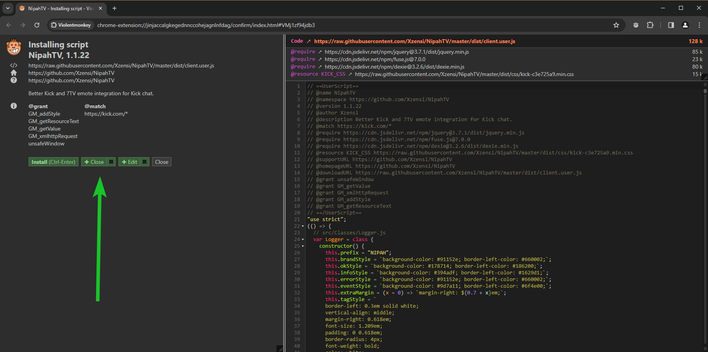Want to keep 7TV extension for Twitch or Youtube?
If you want to keep using the 7TV extension for other sites like Twitch or Youtube, make sure the extension is not enabled on the Kick domain. To do this, either disable the Kick plaform on the 7TV settings page or go to your browser extensions and follow the following steps to disable it.
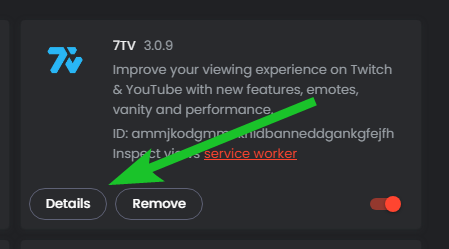 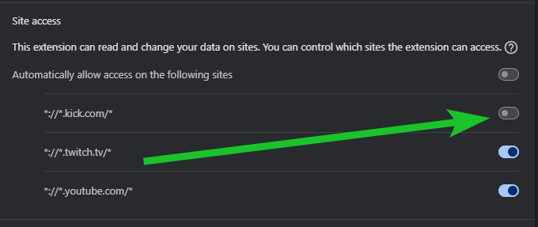That's all there is to it, enjoy!
We recommend using the open source Violentmonkey extension as Userscript manager. You can get it from the Firefox Add-ons.
After installing the Userscript manager, click on the extension and open it's dashboard.
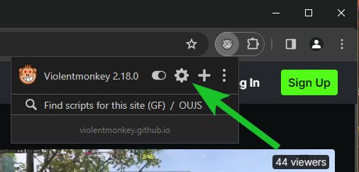Next in the topleft corner click on the plus icon and choose "Install from URL".
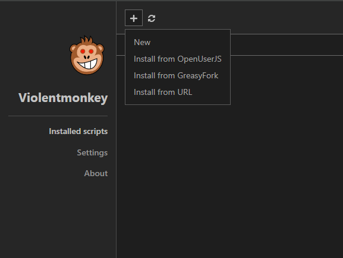It will ask you to input an URL, enter: https://raw.githubusercontent.com/Xzensi/NipahTV/master/dist/userscript/client.user.js
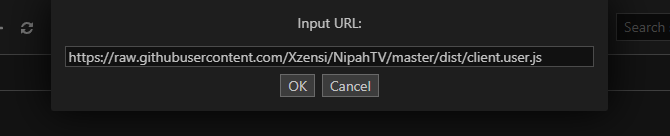On a new page it will ask you to install the script. Press "+ Close" to install and close the page.
Want to keep 7TV extension for Twitch or Youtube?
If you want to keep using the 7TV extension for other sites like Twitch or Youtube, make sure the extension is not enabled on the Kick domain. To do this, either disable the Kick plaform on the 7TV settings page or go to your browser extensions and follow the following steps to disable it.
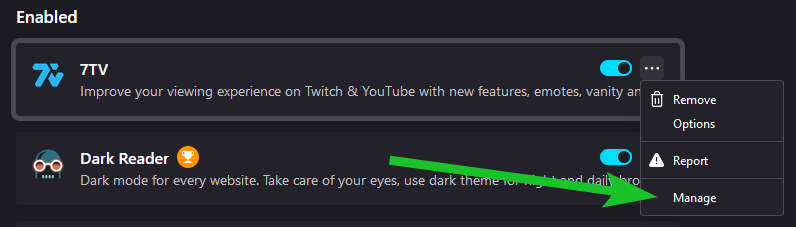 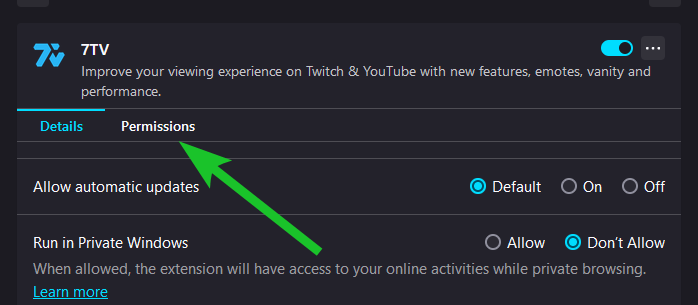 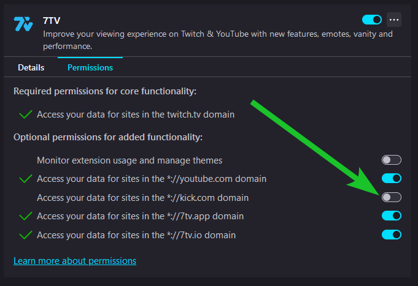That's all there is to it, enjoy!
We recommend using the open source Violentmonkey extension as Userscript manager. You can get it from the Microsoft Edge Add-ons.
After installing the Userscript manager,click here to install the script. A new page will open asking you to install the script. Click the "+ Close" button to install the script and close the page. Lastly, make sure to read the part about 7TV in this section.
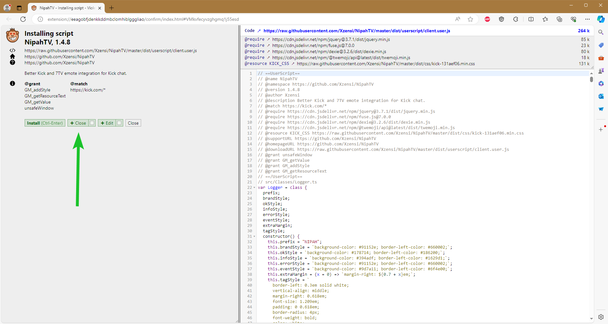Want to keep 7TV extension for Twitch or Youtube?
If you want to keep using the 7TV extension for other sites like Twitch or Youtube, make sure the extension is not enabled on the Kick domain. To do this, either disable the Kick plaform on the 7TV settings page or go to your browser extensions and follow the following steps to disable it.
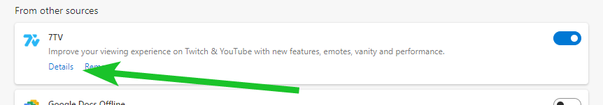 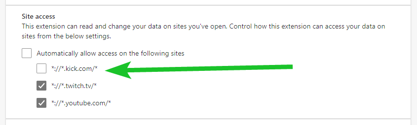That's all there is to it, enjoy!
Should be same steps as Chrome and Edge. Please let me know if it's not.
I don't have a Mac so I can't add instructions for this. If you have a Mac, please send me some screenshots and instructions if you can so I can add them here.
If you're already familiar with userscripts, you can just grab it from this URL:
https://raw.githubusercontent.com/Xzensi/NipahTV/master/dist/userscript/client.user.js
Make sure you don't have 7TV extension enabled alongside NipahTV on Kick. Just disable the extension for the kick domain/plaform in your browser settings of the extension.